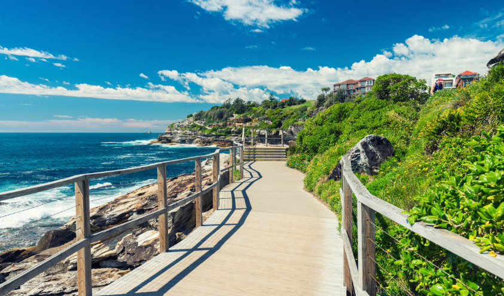
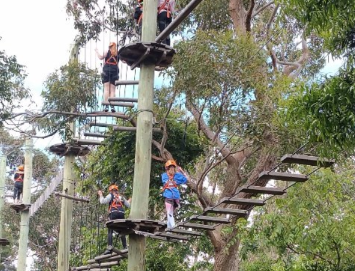
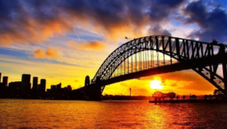
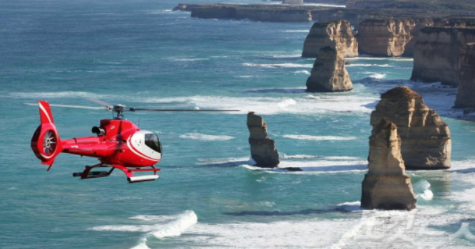
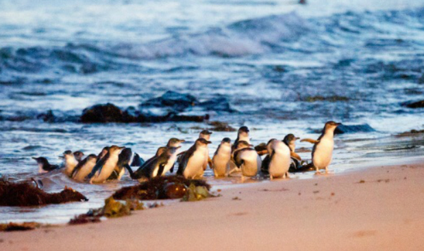

▶ 추천 장소
|  | 시드니에서 유명한 Bondi-Coogee 해안 산책로를 따라가다 보면 장관을 이루는 , Tamarama, Bronte, Clovelly, 마지막으로 Coogee Beach 등의 시드니 동부 해변을 거치게 된다. 이 산책로는 본다이 아이스버그(Bondi Icebergs) 수영장에서 출발하여 마크스 파크(Marks Park)에 있는 원주민 암벽 조각품들을 지나게 되고 가는 길에 수영을 즐길 수 있는 기회도 무궁무진하다. |
|  | 환상적인 물가에 위치한 타롱가 동물원에는 고릴라, 호랑이, 표범, 침팬지, 기린, 호주 바다사자, 캥거루, 코알라 등의 다양한 외래종과 토착종 4천여종이 살고 있다. 동물들을 가까이서 만났다면, 이번에는 집라인, 로프타기, 흔들다리 등 4가지 코스에서 60개 이상의 높은 로프 챌린지를 하는 나무 위 와일드 로프스(Wild Ropes)에 도전하여 야생동물을 새로운 관점에서 체험해는 것도 좋다. |
|  | “옷걸이(The Coathanger)”라는 별명을 가진 1932년에 지어진 시드니 하버 브릿지는 호주에서 가장 위대한 공학 기술 업적 중 하나로 꼽힌다. 관광객들은 자유롭게 걷거나 자전거를 타고 이 거대한 구조물을 건널 수 있지만 그 정상까지 올라 최상의 전경을 만끽할 기회를 잡고 싶으면 코스를 예약하는 것이 좋다. 이 탐험 코스로 해발 134미터(440피트) 정상에 도달하기 전에 아치들이 높이 있는 곳까지 오르게 된다. 특별히 등반 기술이 필요한 것은 아니고 해질녘, 새벽녘을 비롯하여 하루 종일 다양한 시간대에 이용할 수 있다. |
|  | 그레이트 오션 로드는 멜버른의 가장 대표적인 관광지이다. 해안 절벽으로 이어지는 드라이브 코스와 바닷속에서 솟아오른 것 같은 기암괴석으로 유명하다. 한적한 도로를 따라 바다를 보며 차를 타고 지나가는 것도 좋지만, 가볍게 즐기는 트래킹 코스 '그레이트 오션 워크' 도 많은 여행객에게 인기가 높다. 또 하늘 위에서 헬기를 타고 내려다보는 전경 또한 두말할 것 없이 환상적이다. 이용 요금은 11시간 동안 하는 그레이트 오션 로드 버스 투어가 1인당 75달러(한화 약 6만6400원), 10분 소요되는 그레이트 오션 로드에서 헬기 탑승이 1인당 95달러(한화 약 8만4000원)이다. |
|  | 다양한 야생 동물들을 만나볼 수 있는 필립 아일랜드는 야생 동물들이 서식하여, 서식 보호지로 유명한 곳이다. 가장 유명한 것은 밤이 되면 집으로 돌아오는 펭귄들을 구경하는 것이다. 작고 아담한 펭귄들 수백 마리가 바다에서 나와 굴속으로 들어가는 모습이 마치 행진하는 것 같다 하여 '펭귄 퍼레이드'라고 불린다. 매일 밤 이 모습을 보기 위해 많은 사람이 뷰 포인트에 앉아 펭귄들을 기다린다. 본 상품은 필립 아일랜드 반나절 버스 투어를 1인당 80달러(한화 약 7만원), 퍼핑 빌리와 필립 아일랜드 버스투어를 1인당 115달러(한화 약 10만원)에 제공한다. |